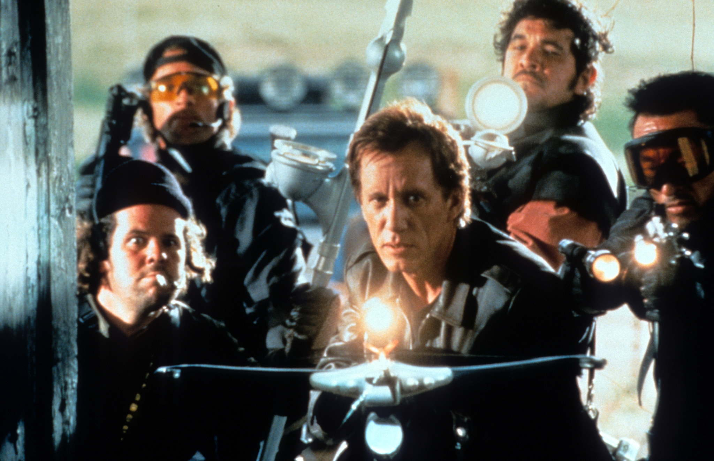
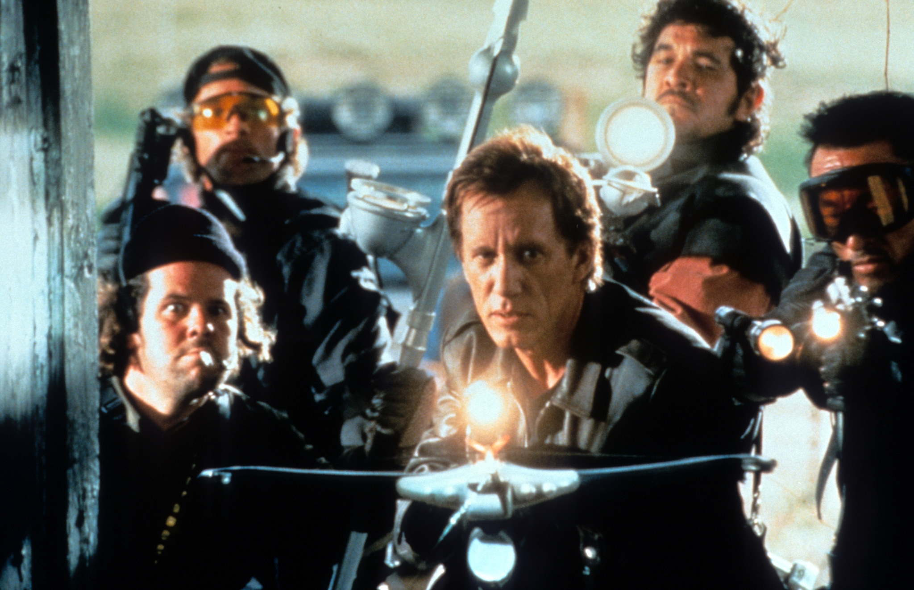

🚪 door 11 of the spell 🚪
zombies
lalala
meanwhile... indulge yourself with our 2025 edition of
the top 11 most delightful zombie flicks of all time:
the top 11 most delightful zombie flicks of all time:
- Interview with the Vampire (1994), by Neil Jordan
- Nosferatu (1922), by F.W. Murnau
- From Dusk Till Dawn (1996), by Robert Rodriguez
- Sinners (2025), by Ryan Coogler
- The Lost Boys (1987), by Joel Schumacher
- Bram Stoker's Dracula (1992), by Francis Ford Coppola
- Let the Right One In (2008), by Tomas Alfredson
- 30 Days of Night (2007), by David Slade
- Dracula (1931), by Tod Browning
- Nosferatu the Vampyre (1979), by Werner Herzog
- Cronos (1993), by Guillermo del Toro
- Daybreakers (2009), by Michael Spierig && Peter Spierig
- Thirst (2009), by Park Chan-wook
- Only Lovers Left Alive (2013), by Jim Jarmusch
- What We Do in the Shadows (2014), by J. Clement && T. Waititi
- Horror of Dracula (1958), by Terence Fisher
- Vampires (1998), by John Carpenter
- Stake Land (2010), by Jim Mickle
- Buffy, The Vampire Slayer S1 (1997), by J. Whedon

 



← back to the countdown